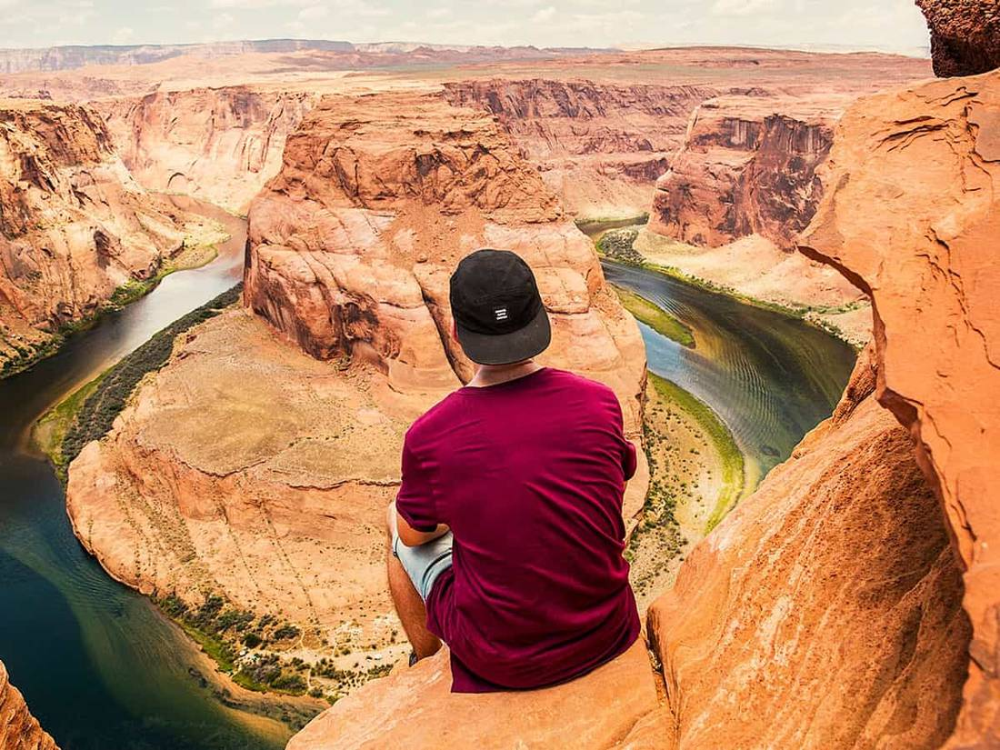

I arrived forty minutes before sunrise, which in practice meant I arrived in the dark, following a thin flashlight beam along a trail I couldn’t see. The cold was a surprise. Nobody tells you the desert is cold at five in the morning.
Then the light came. It didn’t arrive all at once; it crept down the opposite wall, turning grey rock to orange and then to a colour I still don’t have a word for. People around me fell silent without being asked.
I’ve been to many viewpoints that are better known and more crowded. This one stayed with me because for twenty minutes nothing happened except the day beginning. I took a few photographs and then put the camera away.
If you go: bring a jacket, a thermos and a bit of patience. The best light was in the minutes before the sun actually cleared the horizon, not after.